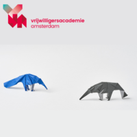
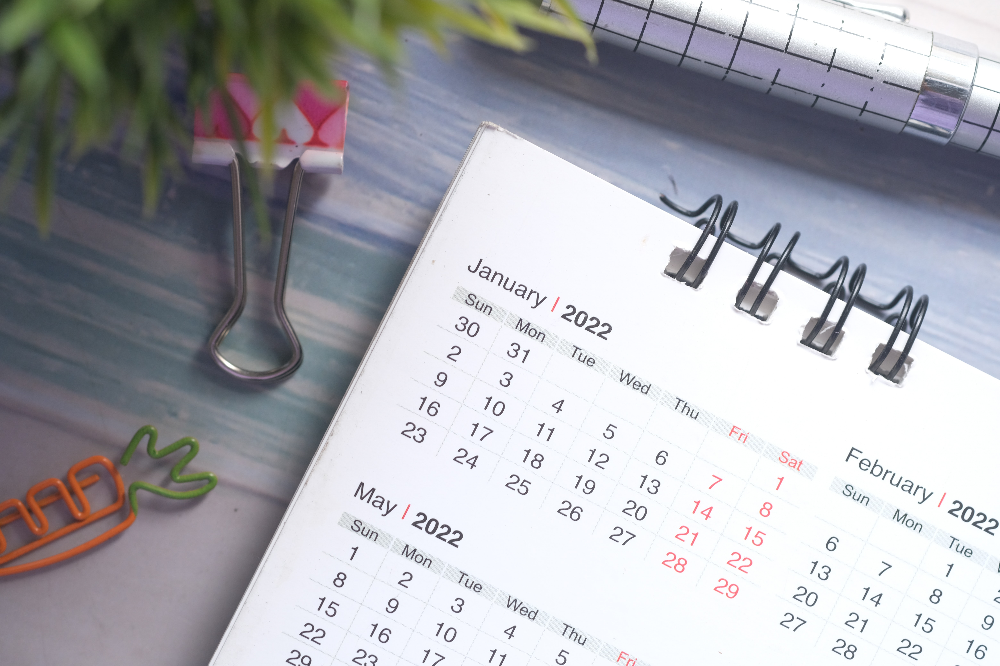
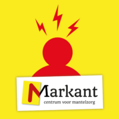

In je vrijwilligerswerk kun je in contact komen met autisme. Voor jou als maatje kan het helpen om te begrijpen wat het is om een autismespectrumstoornis (ASS) te hebben en hoe je het beste iemand met autisme kan ondersteunen. Het is daarnaast fijn als je autisme kunt herkennen.


Motiveren in contact
In deze training krijg je als vrijwilliger handvatten en inspiratie om je deelnemer beter te leren kennen, beter te kunnen ondersteunen in het vergroten van haar/zijn leefwereld.
Informatieavond Zelfzorg voor mantelzorgers
Zorg je voor een naaste en kun je ondersteuning, informatie of advies gebruiken? Heb je soms het idee dat je emmertje (bijna) overloopt?

Oplossingsgericht werken
Door de focus te leggen op waar iemand naar op weg is en wat iemand zelf al in huis heeft, kun je iemand ondersteunen om een stapje vooruit te zetten.
Theatercollege ‘De negen open deuren’
Communiceren is zo dicht mogelijk langs elkaar heen praten. Hoe je dat doet? Dat en meer leer je in het theatercollege ‘De negen open deuren’!
cursus ‘EHBO’
EHBO staat voor Eerste Hulp Bij Ongelukken. Een niet te onderschatten onderdeel van elk evenement of activiteit. De “1e hulp” leert zich in te zetten voor het bieden van hulp bij ongevallen en leert adequaat te reageren en in te spelen op situaties die zich voordoen.